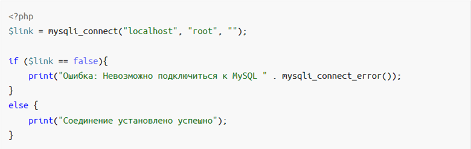
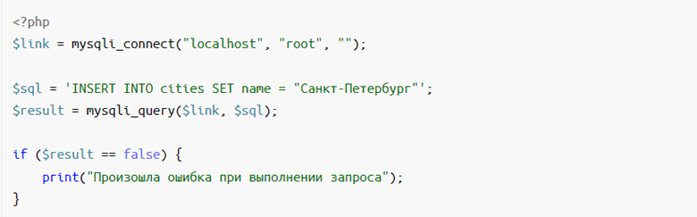
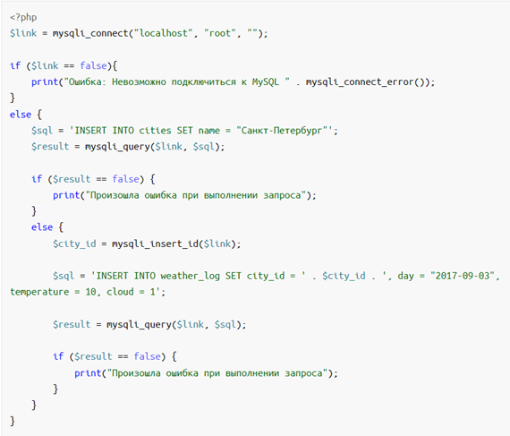
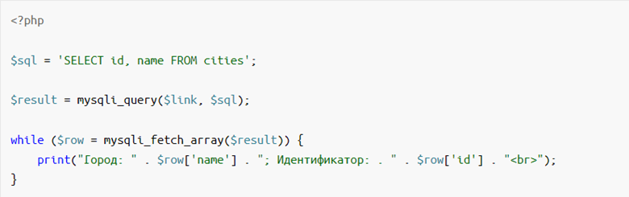
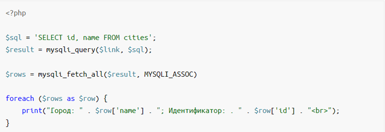
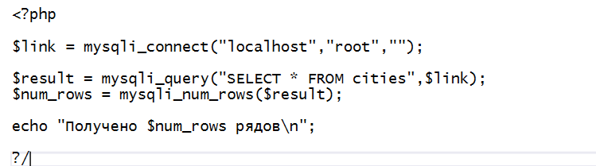

Что такое база данных
База данных - это место, в котором хранятся данные сайта. Это могут быть тексты страниц, списки пользователей с их логинами и паролями, каталоги продукции и другое.
База данных состоит из таблиц. Что такое таблица вы знаете из жизни: это строки и столбцы. А на пересечении строк и столбцов располагаются ячейки.
В базах данных столбцы часто называют полями.
Это легко можно вообразить себе, представив документ Excel. Базой данных будет являться сам документ (книга), а таблицами - каждый лист этой книги.
MySQL
Язык структурированных запросов (Structured Query Language, SQL) – самый распространенный язык, предназначенный для записи, извлечения, обновления и удаления информации в системах управления реляционными базами данных. Реляционная означает, что база данных соответствует реляционной модели, и относится к схеме и принципам хранения данных. Схема описывает структуру хранимых данных.
Реляционная база данных представляет собой набор таблиц, однако достаточно часто в состав базы данных входят и другие элементы, позволяющие дополнительно влиять на организацию и структуру данных в соответствии с определенным набором требований.
MySQL – это полнофункциональная свободно распространяемая система управления реляционными базами данных. MySQL начали разрабатывать в 1990-х годах, поскольку потребность в разумном управлении компьютерной информацией постоянно росла. Разработчики ядра MySQL пытались решить эту проблему с помощью маленькой и простой базы данных mSQL. Когда выяснилось, что mSQL не справляется со всеми задачами, которые создателям хотелось на нее возложить, они создали более мощную базу данных, которая превратилась в MySQL.
MySQL поддерживает несколько различных механизмов базы данных (database engines).
Механизмы базы данных определяют, как MySQL в данный момент обрабатывает хранение и извлечение данных. Как следствие, каждый механизм хранения обладает собственным набором возможностей и преимуществ.
Что такое PHP
PHP поддерживает работу с базой данных MySQL.
Специальные встроенные функции для работы с MySQL позволяют просто и эффективно работать с этой СУБД: выполнять любые запросы, читать и записывать данные, обрабатывать ошибки.
Сценарий, который подключается к БД, выполняет запрос и показывает результат, будет состоять всего из нескольких строк. Для работы с MySQL не надо ничего дополнительно устанавливать и настраивать; всё необходимое уже доступно вместе со стандартной поставкой PHP.
Что такое MySQLi
MySQLi (MySQL Improved) — это расширение PHP, которое добавляет в язык полную поддержку баз данных MySQL. Это расширение поддерживает множество возможностей современных версий MySQL.
Как выглядит работа с базой данных
Типичный процесс работы с СУБД в PHP-сценарии состоит из нескольких шагов:
- Установить подключение к серверу СУБД, передав необходимые параметры: адрес, логин, пароль.
- Убедиться, что подключение прошло успешно: сервер СУБД доступен, логин и пароль верные и так далее.
- Сформировать правильный SQL запрос (например, на чтение данных из таблицы).
- Убедиться, что запрос был выполнен успешно.
- Получить результат от СУБД в виде массива из записей.
- Использовать полученные записи в своём сценарии (например, показать их в виде таблицы).
Функция mysqli_connect() соединение с MySQL
Перед началом работы с данными внутри MySQL, нужно открыть соединение с сервером СУБД.
В PHP это делается с помощью стандартной функции mysqli_connect(). Функция возвращает результат — ресурс соединения. Данный ресурс используется для всех следующих операций с MySQL.
Но чтобы выполнить соединение с сервером, необходимо знать как минимум три параметра:
- Адрес сервера СУБД;
- Логин;
- Пароль.
Если вы следовали стандартной процедуре установки MySQL или используете OpenServer, то адресом сервера будет localhost, логином — root. При использовании OpenServer пароль для подключения — это пустая строка ‘’, а при самостоятельной установке MySQL пароль вы задавали в одном из шагов мастера установки.
Базовый синтаксис функции mysqli_connect():
Проверка соединения
Первое, что нужно сделать после соединения с СУБД — это выполнить проверку, что оно было успешным.
Эта проверка нужна, чтобы исключить ошибку при подключении к БД. Неверные параметры подключения, неправильная настройка или высокая нагрузка заставит MySQL отвергать новые подключения. Все эти ситуации приведут к невозможности соединения, поэтому программист должен проверить успешность подключения к серверу, прежде чем выполнять следующие действия.
Соединение с MySQL устанавливается один раз в сценарии, а затем используется при всех запросах к БД.
Результатом выполнения функции mysqli_connect() будет значение специального типа — ресурс.
Если подключение к MySQL не удалось, то функция mysqli_connect() вместо ресурса вернет логическое значение типа «ложь» — false.
Хорошей практикой будет всегда проверять значение результата выполнения этой функции и сравнивать его с ложью.
Соединение с MySQL и проверка на ошибки:

Функция mysqli_connect_error() просто возвращает текстовое описание последней ошибки MySQL.
Установка кодировки
Первым делом после установки соединения крайне желательно явно задать кодировку, которая будет использоваться при обмене данными с MySQL. Если этого не сделать, то вместо записей со значениями, написанными кириллицей, можно получить последовательность из знаков вопроса: ‘?????????????????’.
Сразу после успешной установки соединения вызовите функцию:mysqli_set_charset($con, "utf8")
Выполнение запросов
Установив соединение и определив кодировку, мы готовы выполнить свои первые SQL-запросы. Вы уже умеете составлять корректные SQL команды и выполнять их через консольный или визуальный интерфейс MySQL-клиента.
Те же самые запросы можно отправлять без изменений и из PHP-сценария. Помогут в этом несколько встроенных функций языка.
Два вида запросов
Следует разделять все SQL-запросы на две группы:
- Чтение информации (SELECT);
- Модификация (UPDATE,DELETE,INSERT).
При выполнении запросов из среды PHP, запросы из второй группы возвращают только результат их исполнения: успех или ошибку.
Запросы первой группы при успешном выполнении возвращают специальный ресурс результата. Его, в свою очередь, можно преобразовать в ассоциативный массив (если нужна одна запись) или в двумерный массив (если требуется список записей).
Добавление записи
Пусть у нас есть проект — дневник наблюдений за погодой. Начнём практическую работу с заполнения таблиц данными. Для начала добавим хотя бы один город в таблицу cities.
Выражение INSERT INTO используется для добавления новых записей в таблицу базы данных.
Составим корректный SQL-запрос на вставку записи с именем города, а затем выполним его путём передачи этого запроса в функцию mysqli_query(), чтобы добавить новые данные в таблицу.

Обратите внимание, что первым параметром для функциии mysqli_query() передаётся ресурс подключения, полученный от функции mysqli_connect(), вторым параметром следует строка с SQL-запросом.
При запросах на изменение данных (не SELECT) результатом выполнения будет логическое значение — true или false.
false будет означать, что запрос выполнить не удалось. Для получения строки с описанием ошибки существует функция mysqli_error($link).
Функция mysqli_insert_id:получение идентификатора добавленной записи
Следующим шагом будет добавление погодной записи для нового города.
Погодные записи хранит таблица weather_log, но, чтобы сослаться на город, необходимо знать идентификатор записи из таблицы cities.
Здесь пригодится функция mysqli_insert_id().
Она принимает единственный аргумент — ресурс соединения, а возвращает идентификатор последней добавленной записи.
Теперь у нас есть всё необходимое, чтобы добавить погодную запись.
Вот как будет выглядеть комплексный пример с подключением к MySQL и добавлением двух новых записей:

Чтение записей
Другая частая операция при работе с базами данных в PHP — это получение записей из таблиц (запросы типа SELECT).
Составим SQL-запрос, который будет использовать SELECT выражение. Затем выполним этот запрос с помощью функции mysqli_query(), чтобы получить данные из таблицы.
В этом примере показано, как вывести все существующие города из таблицы cities:

В примере выше результат выполнения функции mysqli_query() сохранён в переменной $result.
Важно понимать, что в этой переменной находятся не данные из таблицы, а специальный тип данных — так называемая ссылка на результаты запроса.
Чтобы получить действительные данные, то есть записи из таблицы, следует использовать другую функцию — mysqli_fetch_array() — и передать ей единственным параметром эту самую ссылку.
Теперь каждый вызов функции mysqli_fetch_array() будет возвращать следующую запись из всего результирующего набора записей в виде ассоциативного массива.
Цикл while здесь используется для «прохода» по всем записям из полученного набора записей.
Значение поля каждой записи можно узнать просто обратившись по ключу этого ассоциативного массива.
Как получить сразу все записи в виде двумерного массива
Иногда бывает удобно после запроса на чтение не вызывать в цикле mysqli_fetch_array для извлечения очередной записи по порядку, а получить их сразу все одним вызовом. PHP так тоже умеет. Функция mysqli_fetch_all($res, MYSQLI_ASSOC) вернёт двумерный массив со всеми записями из результата последнего запроса.
Перепишем пример с показом существующих городов с её использованием:

Как узнать количество записей
Часто бывает необходимо узнать, сколько всего записей вернёт выполненный SQL запрос.
Это может помочь при организации постраничной навигации, или просто в качестве информации.
Узнать число записей поможет функция mysqli_num_rows(), которой следует передать ссылку на результат запроса.
